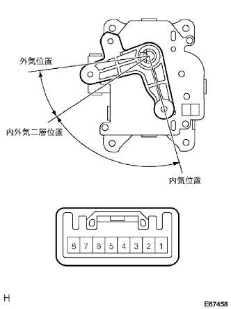

ダンパ サーボSUB-ASSY NO.1 単体点検
印刷
1. ダンパ サーボSUB-ASSY NO.1点検
コネクタの7端子にバッテリーのプラス、8端子にバッテリーのマイナスを接続する。

コネクタの各端子にバッテリーのマイナスを接続したとき、アームがスムーズに回転し、各モード位置で停止することを点検する。
基準
バッテリーマイナス接続端子
アーム停止位置
1
内気位置
2
内外気二層位置(寒冷地仕様のみ)
3
外気位置